Cơ sở vật chất
Học viện Ngân hàng được thành lập từ năm 1961. Trải qua hơn nửa thế kỷ xây dựng và phát triển, Học viện Ngân hàng là trường đại học công lập đa ngành trực thuộc Ngân hàng Nhà nước Việt Nam và Bộ Giáo dục và Đào tạo.
Ở đây gần như hột tụ đủ mọi thứ từ quần áo cho đến ăn uống, vui chơi giải trí. Học tại con phố Chùa Bộc đồng nghĩa với việc bạn được chứng kiến 2 loại đặc sản: bể bơi sau mưa và tắc đường giờ cao điểm.
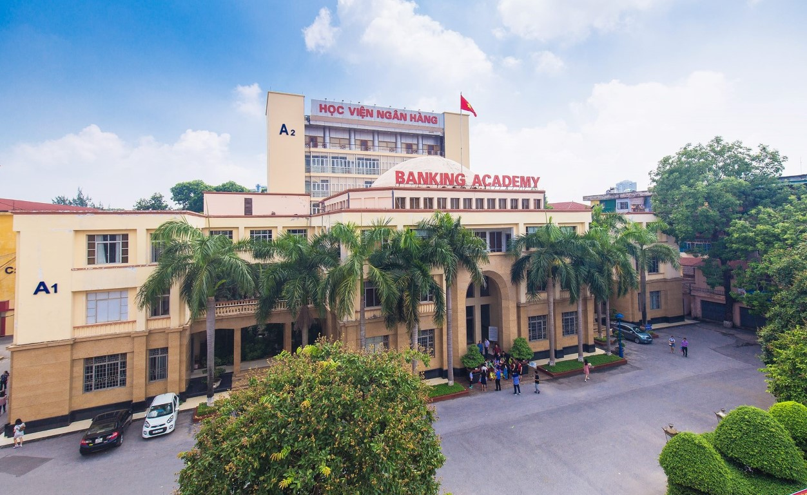 Góc nhìn từ trên cao của học viện Ngân Hàng (Nguồn: Học Viện Ngân Hàng)Khuôn viên trường khá nhỏ, nhưng lại phủ toàn cây xanh và hoa lá từ tầng 1 đến tầng 6.
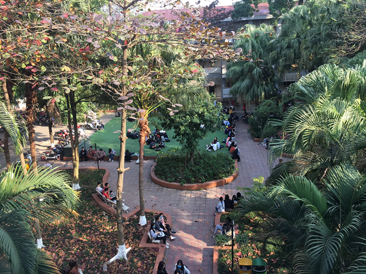 Khuôn viên trường (Nguồn fb: Hội Sinh Viên Học Viện Ngân Hàng)
Địa chỉ: Số 12, đường Chùa Bộc, Quận Đống Đa, Hà Nội, Việt Nam Trường tọa lạc giữa trung tâm thủ đô Hà Nội, tại “kinh đô thời trang” Chùa Bộc, cổng sau đi ra Đặng Văn Ngữ và Hồ Đắc Di với vô vàn món ăn vặt.
Ở đây gần như hột tụ đủ mọi thứ từ quần áo cho đến ăn uống, vui chơi giải trí. Học tại con phố Chùa Bộc đồng nghĩa với việc bạn được chứng kiến 2 loại đặc sản: bể bơi sau mưa và tắc đường giờ cao điểm.
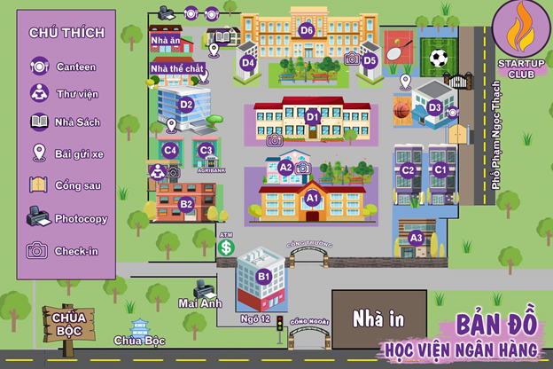 Bản đồ của học viện Ngân Hàng (Nguồn fb: Hội Sinh Viên Học Viện Ngân Hàng) Hoặc là các bạn cũng có thể xem ở đây nhé: Bản đồThư viện
Trụ sở của Trung tâm được bố trí trong tòa nhà 7 tầng với diện tích sử dụng 2000m2, gồm các phòng làm việc, hệ thống kho, phòng đọc mở có khả năng phục vụ trên 1000 lượt NDT hàng ngày.
Tầng 1 để đồ và check-in, có khu đồ thất lạc. Tầng tiếp là phòng đọc sách, phòng tự học , có phòng máy tính kết nối mạng đầy đủ. Có Wifi. Tủ đồ không có khóa sẵn, SV phải tự mua.
Các phòng đọc đều được trang bị hệ thống giá sách mới, hiện đại, bàn đọc ghế ngồi đều được trang bị phù hợp với tiêu chuẩn của thư viện hiện đại
Thời gian mở cửa: từ T2 đến T6: 7h30 – 20h30 (T6 đóng cửa tổng vệ sinh từ 11:30 – 17:00).
Lưu ý: Chỉ mang nước lọc và tài liệu. Cặp gửi ở tủ đồ. Không được làm ồn, gây ảnh hưởng đến bạn khác 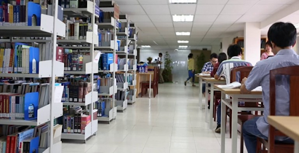 Thư viện Học viện Ngân hàng (Nguồn: https://edu2review.com) 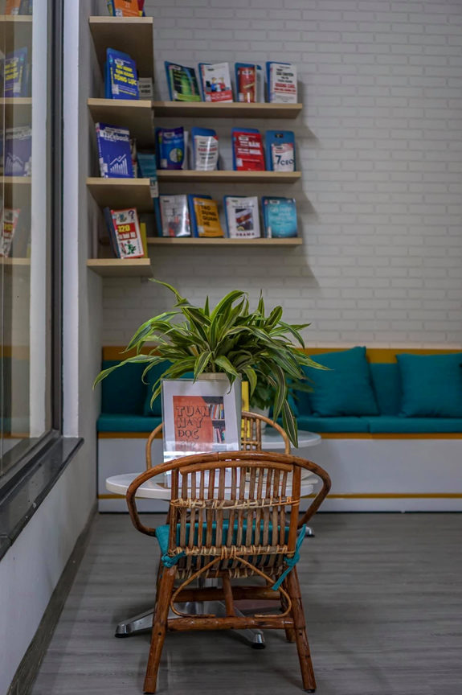 Một góc trong thư viện (Nguồn fb: K22 – Học viện Ngân hàng)Nhà ăn
Nhà ăn E bao gồm 3 tầng:
- Tầng 1: Canteen của Học viện. Ở đây bán rất nhiều đồ ăn vặt.
- Tầng 2: Tầng dùng để tổ chức đám cưới.
- Tầng 3: Nơi sinh hoạt của các CLB.
Xem chi tiết tại mục Canteen nha.
Hệ thống giảng đường
Các tòa học gồm: D1 – D6
- Tòa nhà D2
- Tòa nhà D3
- Tòa nhà B1
- Tòa nhà A2
- Tòa nhà A1
D2 là tòa nhà có hệ thống cơ sở vật tốt với đầy đủ trang thiết bị hiện đại. Trong đó, từ tầng 6 trở lên là cho hệ Chất lượng cao.
Giảng đường D3. Được mệnh danh là khu giảng đường “xịn sò” nhất Học viện Ngân Hàng, tòa nhà D3 mang trong mình nét đẹp hiện đại, văn minh. Nơi đây là giảng đường dành cho các bạn sinh viên khoa Quốc tế và Chất lượng cao của Học viện. Tuy nhiên, bạn hoàn toàn có thể đến đây để có những bức hình sống ảo “sang chảnh” nhé.
Đây là nơi đăng ký thi chứng chỉ ngoại ngữ, tin học.
Là tòa dành cho các khoa trong trường. Mỗi khoa có tầng riêng biệt. Nếu sinh viên có mọi thắc mắc gì, phòng Quản lý người học tại tầng 1 phòng 101 sẽ giải đáp tất cả.
“Cơ quan đầu não” của HVNN. Có phòng Đào tạo – nơi làm thủ tục học tập; phòng Tài chính Kế toán – nơi giải quyết về tiền bạc. Phòng học được trang bị hiện địa có điều hòa, máy chiếu, âm thanh tốt, phục vụ lên tới hơn 70 người/phòng.
Hệ thống phòng học có trang bị thiết bị hội thảo truyền hình có thể phục vụ đào tạo trực tuyến, hội thảo từ xa.
Khu sinh hoạt thể chất cho sinh viên
Sinh viên được tham gia các hoạt động rèn luyện thể lực với các môn thể thao tại sân bóng đá, sân tennis, sân cầu lông, sân bóng chuyền,…
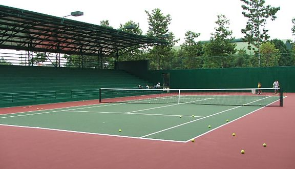 Sân tennis tại học viện Ngân Hàng (Nguồn fb: K22 – Học viện Ngân hàng)Sân bóng rổ thường bị trưng dụng làm chỗ để xe
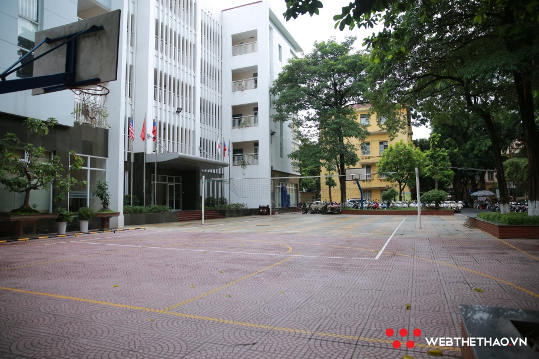 Sân bóng rổ + bóng chuyền (Nguồn: https://webthethao.vn)![[có lỗi khi tải ảnh]](img/hv_ngan_hang_co_so_vat_chat/hv_ngan_hang_bong_ro (2).png) (Nguồn: https://webthethao.vn)
(Nguồn: https://webthethao.vn)
Trung tâm thực hành
Cơ sở vật chất của Trung tâm thực hành được trang bị khang trang và hiện đại với tòa nhà 5 tầng bao gồm:
- 8 phòng máy tính đào tạo thực hành
- 8 phòng chức năng
- Tổng diện tích sử dụng 1335m2
- 2 phòng đào tạo Ngoại ngữ (Lab) mỗi phòng có 42 trạm học viên.
Ký túc xá
Gồm có 4 tòa: C1 – C4.
Xem chi tiết tại mục Ký túc xá.
Ký túc xá
Thời gian bán:
- Sáng 8h00 – 11h30
- Chiều 13h30 – 17h00
Đa dạng sách từ năm 1 đến năm 4 mà sinh viên sẽ học.
Nếu không mua trực tiếp có thể đăng kí mua sách số.
Chỗ để xe
Vì khuôn viên trường nhỏ nên chỗ để xe thường dưới chân các tòa học.
Chỗ để xe rất đa dạng nhưng nhớ tuân theo hướng dẫn của bác bảo vệ, tránh ảnh hưởng cho những bạn đến sau nhé.
Học chương trình Chất lượng cao thì có
một hầm để xe riêng, ở tòa D2.
![[có lỗi khi tải ảnh]](img/hv_ngan_hang_co_so_vat_chat/hv_ngan_hang_de_xe.png) Chỗ để xe (Nguồn fb: Hội Sinh Viên Học Viện Ngân Hàng)
Chỗ để xe (Nguồn fb: Hội Sinh Viên Học Viện Ngân Hàng)
Một vài địa điểm check-in
- Một góc nhỏ dưới chân khu D6 nối sang khi D5 của Học viện được rất nhiều các bạn sinh viên lui tới check-in. Đây có lẽ là địa điểm được các cô nàng bánh bèo đặc biệt yêu thích bởi những bức ảnh được chụp ở đây thì siêu mộng mơ. 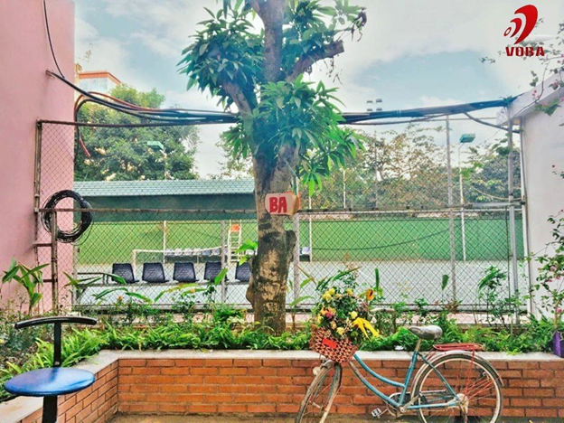 (Nguồn fb: K22 – Học viện Ngân hàng)
- Cầu thang xoáy tại khu nhà ăn chắc chắn không BAer nào là không biết.
![[có lỗi khi tải ảnh]](img/hv_ngan_hang_co_so_vat_chat/hv_ngan_hang_song_ao_2.png) (Nguồn fb: K22 – Học viện Ngân hàng)
(Nguồn fb: K22 – Học viện Ngân hàng)
- Cũng nằm trong thư viện tuy nhiên khoảng xanh này ở trên tầng 6 của tòa nhà.
Nếu thấy mệt mỏi hay buồn ngủ khi ôn thi trên thư viện thì đây là nơi có thể thư giãn một chút, chụp vài tấm ảnh sống ảo để tiếp thêm năng lượng, giải tỏa tinh thần, tiếp tục “chiến đấu” với kì thi. 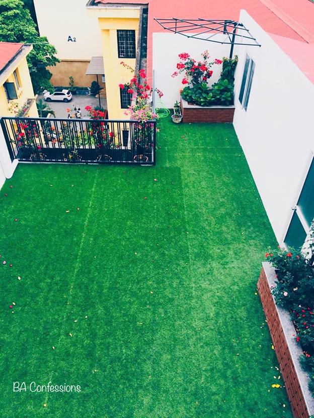 (Nguồn fb: K22 – Học viện Ngân hàng) - Khu check in sang chảnh bậc nhất của Học viện chính là ở đây. WC “không góc chết” trong truyền thuyết của HVNN. Cứ chụp là đẹp miễn chê. 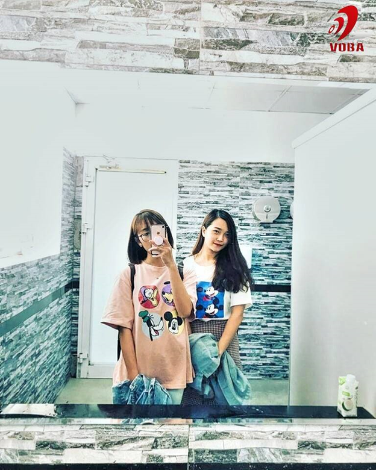 (Nguồn fb: K22 – Học viện Ngân hàng)
- Khuôn viên xanh chính của trường không chỉ là nơi lang thang sau những giờ học, địa điểm lý tưởng để lắng nghe những buổi phát thanh mà còn là nơi cho ra những bức ảnh hòa mình với thiên nhiên, tràn đầy sức sống. 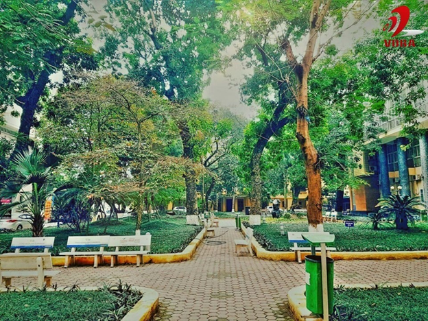 (Nguồn fb: K22 – Học viện Ngân hàng)
- Thư viện hiện nay cũng đang là một địa điểm check in cực hot của sinh viên Ngân hàng. Vào thư viện đọc sách mà cứ ngỡ mình lạc vào một quán cafe thơ mộng ấy thế mà chả tốn xu nào luôn nhé. 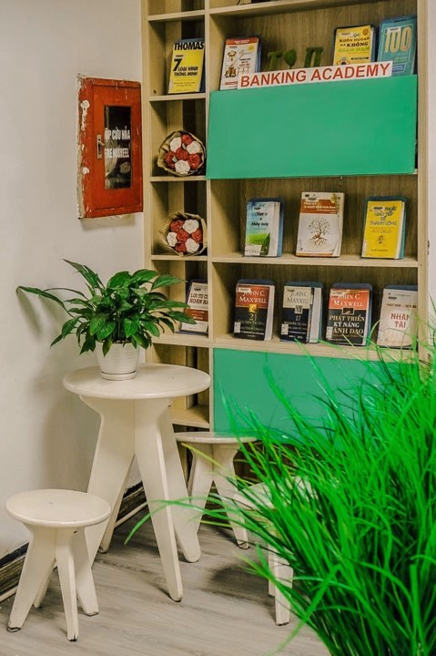 (Nguồn fb: K22 – Học viện Ngân hàng)
Đăng bởi Ngoc Duc
tham khảo thông tin từ:
K22 - Học Viện Ngân Hàng,
Webthethao,
Hội Sinh Viên Học Viện Ngân Hàng,
edu2review
.